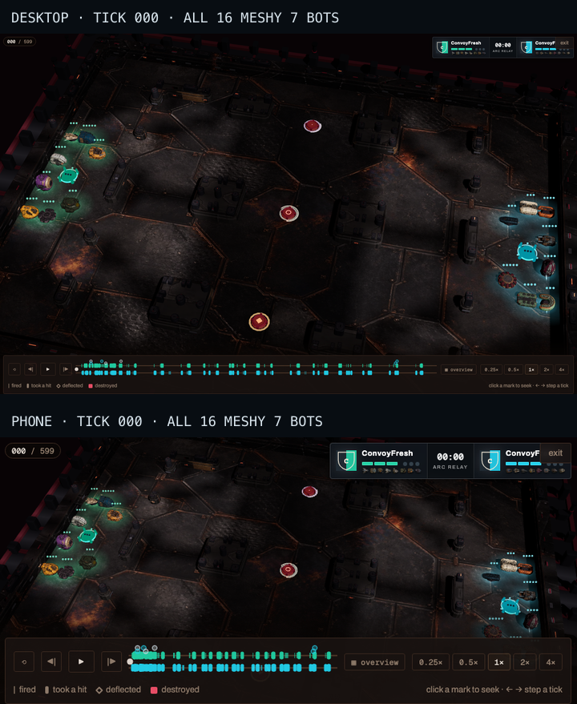
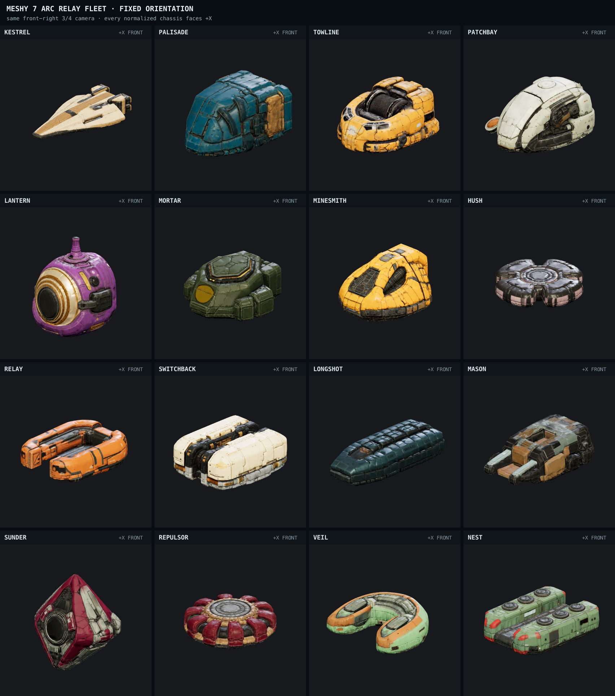

Owner review · not shipping
Meshy 7 Arc Relay fleet
All sixteen new hover-bot concepts are running in the real game renderer. The replay opens with eight blue classes on the left and the other eight orange classes on the right.

The provider contact sheet used independent Meshy thumbnail cameras. The sheet below is the comparison authority: one fixed camera, one scale rule, and every bot normalized to face
+X.In the arena
Desktop and phone, authoritative tick 000, strategic overview. All sixteen candidate hashes loaded through WebGL; the approved runtime files were restored after building.

Corrected orientation sheet
The same front-right three-quarter camera is used for every normalized model. This removes the camera drift in Meshy's generated preview thumbnails.

-X, +X, and +Z, so the review tier now applies a per-bot yaw correction to the Nilbots +X gameplay contract.